درس دوم:
ناهمواریهای استان
خراسان رضوی روی کمربند چینخوردهٔ آلپ ـ هیمالیا نشسته است؛ سرزمینی از رشتهکوههای بلند شمال تا کوههای کمارتفاع جنوب، با دشتهای حاصلخیز و گسلهای فعال. در این درس شکلگیری و نقش این ناهمواریها را میشناسیم.
ارائهدهندگان: محمدحسین ارقبائی، سینا اسدی و امیرعلی اسداللهی
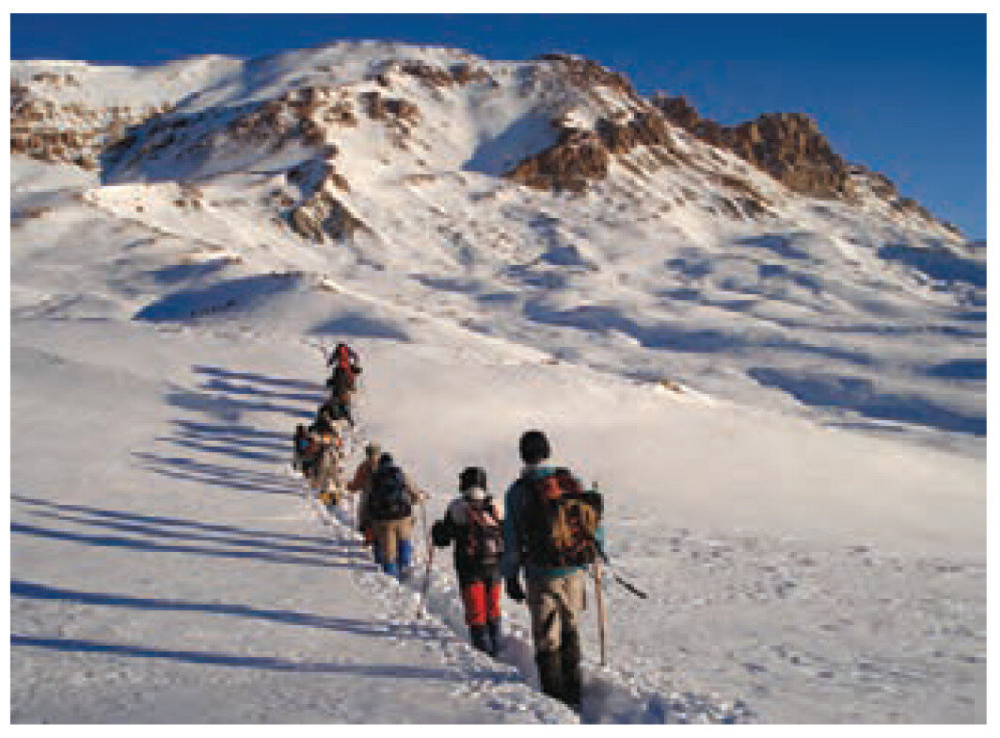
در این درس چه یاد میگیریم؟
کوهها و رودها؛ نشانههایی برای اندیشیدن
وَهُوَ الَّذِي مَدَّ الْأَرْضَ وَجَعَلَ فِيهَا رَوَاسِيَ وَأَنْهَارًا ۖ … إِنَّ فِي ذَٰلِكَ لَآيَاتٍ لِّقَوْمٍ يَتَفَكَّرُونَ ۳
بخشی از فلات ایران، روی کمربند آلپ ـ هیمالیا
سنگها، دفتر خاطرات زمیناند
قدیمیترین سنگها
قدیمیترین سنگهای شناختهشدهٔ استان مربوط به رسوبات نهانزیستی (پرکامبرین) است.
رسوبات دیرینهزیستی
رسوبات دوران دیرینهزیستی (پالئوزوئیک) به صورت اندک و پراکنده در قسمتهای مختلف استان دیده میشود.
گنجینهٔ گاز سرخس
آهکهای ژوراسیک که در کوههای مزدوران رخنمون دارد، در زیر دشت به صورت تاقدیسهای متعدد ظاهر شده و منابع عظیم گاز سرخس را در خود جای داده است.
شکل امروزی؛ از ۴/۵ میلیارد سال پیش تا امروز
نهانزیستی
پرکامبرین
۴۵۰۰ تا ۵۷۰ میلیون سال پیش
قدیمیترین سنگهای استان
دیرینهزیستی
پالئوزوئیک
۵۷۰ تا ۲۴۸ میلیون سال پیش
کامبرین، سیلورین، دونین، کربونیفر، پرمین
میانهزیستی
مزوزوئیک
۲۴۸ تا ۶۵ میلیون سال پیش
تریاس، ژوراسیک (آهکهای مزدوران)، کرتاسه
نوزیستی
سنوزوئیک
۶۵ میلیون سال پیش تا امروز
ترشیاری (اواخر آن: کوهزایی اصلی) و کواترنری (از ۱/۸ ـ شکلگیری چهرهٔ امروز)
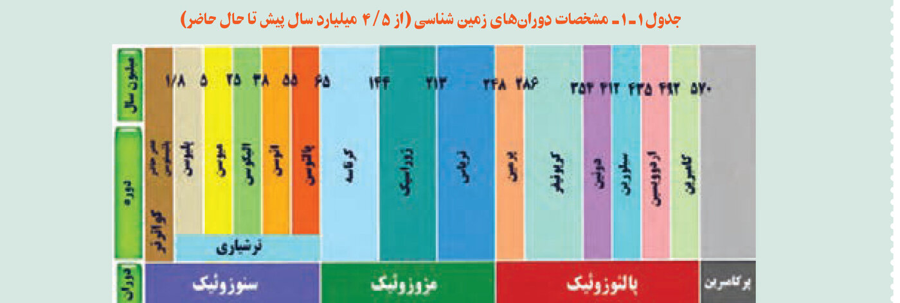
دو بخش اصلی: کوهستان و دشت
نواحی کوهستانی
- الف) بخش شمالی: هزارمسجد، بینالود، جغتای
- ب) کوههای میانی: چهلتن، جام، باخرز، کوه سرخ
- ج) کوههای جنوبی: سیاهکوه و همسایههایش
سرزمینهای هموار
دشتهای پهناور میان رشتهکوهها؛ مانند دشت مشهد، نیشابور، سبزوار، سرخس، تربت حیدریه و گناباد.
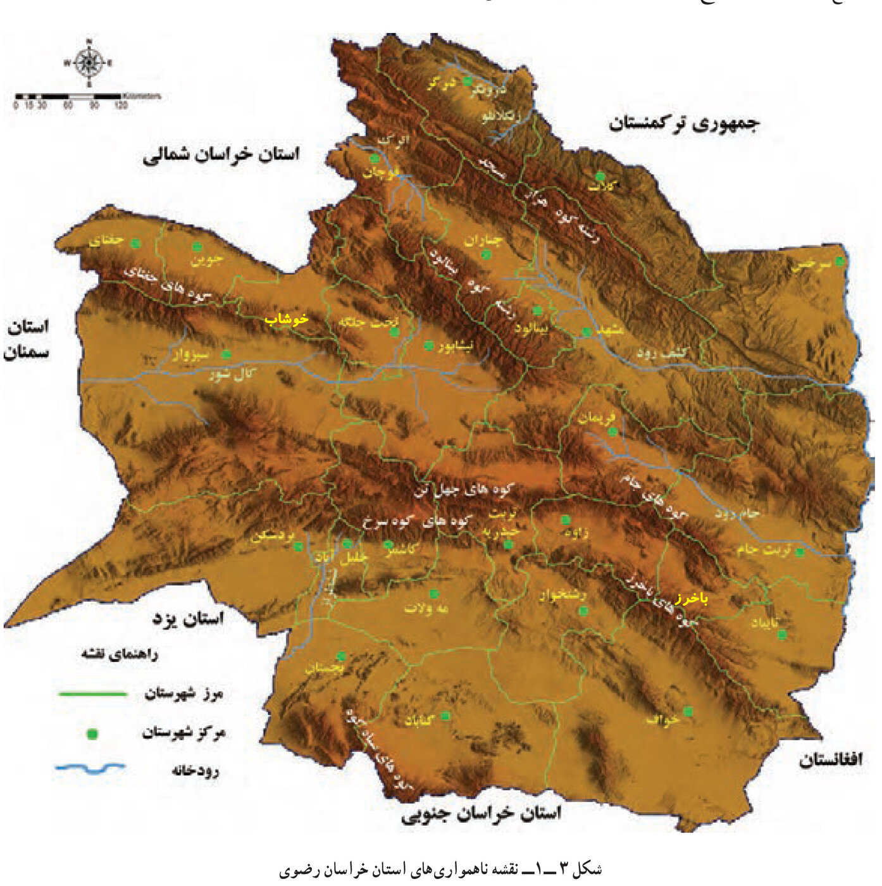
کوههای هزارمسجد
متر ارتفاع تقریبی بلندترین بخش رشتهکوه
امتداد رشتهکوه: از شمالغربی به جنوبشرقی استان
روند ارتفاع: هرچه به سمت سرخس (شرق) میرویم، ارتفاع کمتر میشود
چینهایی منظم؛ مثل زاگرس
پیدایش
چینخوردگیهای هزارمسجد از نوع ژورایی است و شباهت زیادی به زاگرس دارد؛ در یک حوضهٔ رسوبی عمیق و بر اثر کوهزایی آلپ ـ هیمالیا، به شکل تاقدیسها و ناودیسهای منظم و متوالی شکل گرفته است.
نقش آبهای جاری و فرسایش
آبهای جاری شکل ناهمواریها را تغییر دادهاند: تنگ، درههای عرضی و طولی و ناودیس معلق. کلات نادری با شهرت تاریخیاش نمونهٔ یک ناودیس معلق است.
آب زیرزمینی
درز و شکاف و حفرههای انحلالی فراوان در سازندهای آهکی دوران دوم، زمینهٔ مساعد تشکیل سفرههای آب زیرزمینی را فراهم کرده است.
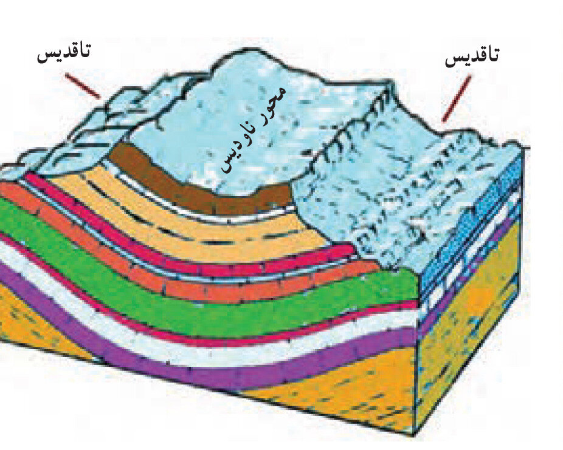
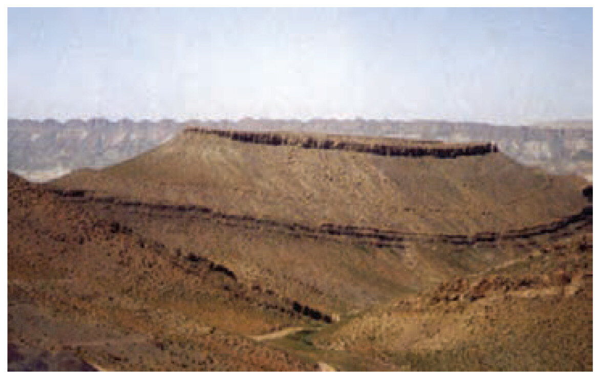
سفر روی نیمرخ: از سرخس تا سبزوار
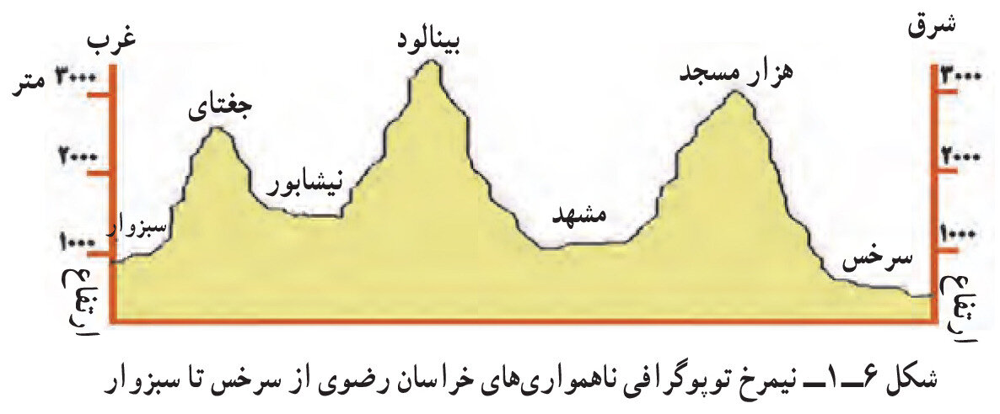
بینالود؛ بام خراسان
شمالشرقی بینالود
دشت مشهد
جنوبغربی بینالود
چالهٔ ساختمانی دشت نیشابور
از درههای عمیق تا باغها و آبادیها
دامنهٔ شمالی: درههای عمیق
به دلیل تفاوت شکل و جنس سنگها و نوع اقلیم، شبکهٔ متراکمی از آبهای جاری در دامنهٔ شمالی گسترش یافته که نتیجهٔ آن شکلگیری درههای عمیق است.
پایکوهها: زمین کشاورزی مناسب
در پایکوههای شمالی و جنوبی بینالود، مخروطافکنهها و سطوح فرسایشی ـ تراکمی با آبرفتها، زمینهای کشاورزی مناسبی به وجود آوردهاند.
۳۴۳ کیلومتر از شمال تا جنوب استان
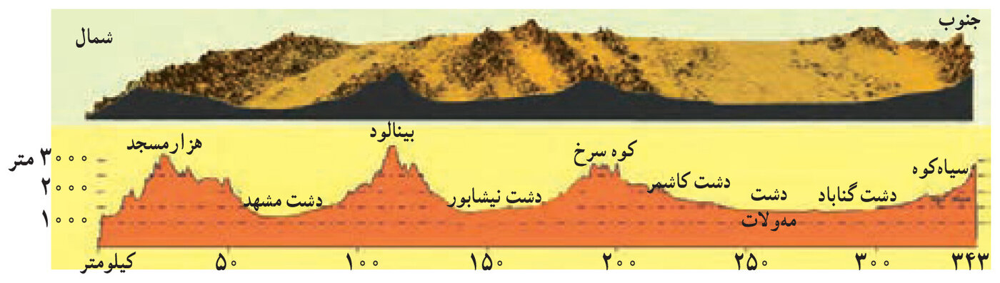
جغتای؛ سدی میان دو دشت
شمال رشتهکوه
دشت جوین و دشت جغتای، همسایهٔ استان خراسان شمالی
جنوب رشتهکوه
دشت سبزوار
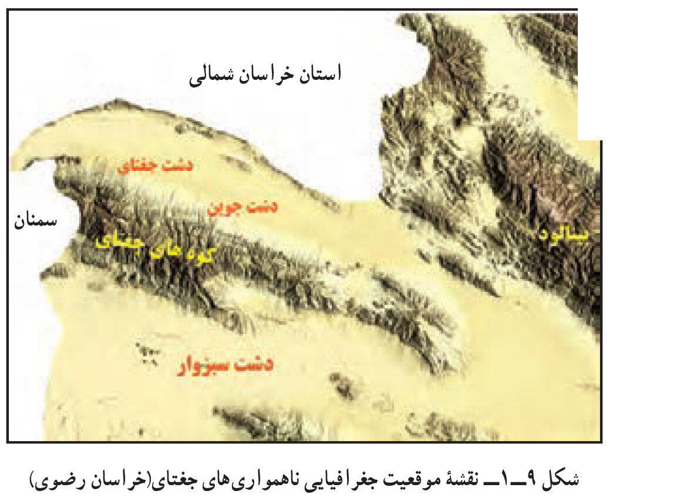
از مشهد به جنوب؛ کوهها کوچکتر میشوند
شاخهٔ شمالی: چهلتن و جام
شهر تربت حیدریه را در خود جای داده است.
شاخهٔ جنوبی: باخرز
به کوههای باخرز پیوسته و تا داخل خاک افغانستان امتداد مییابد.
کوه سرخ و جنس سنگها
مهمترین ارتفاع غرب این کوهها کوه سرخ (حدود ۳۰۰۰ متر) است؛ از سنگهای رسوبی و آذرین تشکیل شدهاند و تعدادی گسل آنها را بریده و تغییر شکل داده است.
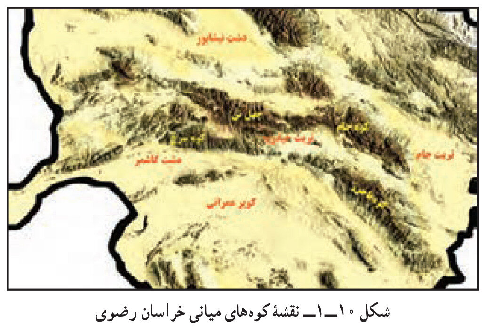
جنوب استان؛ خشکتر و کمارتفاعتر
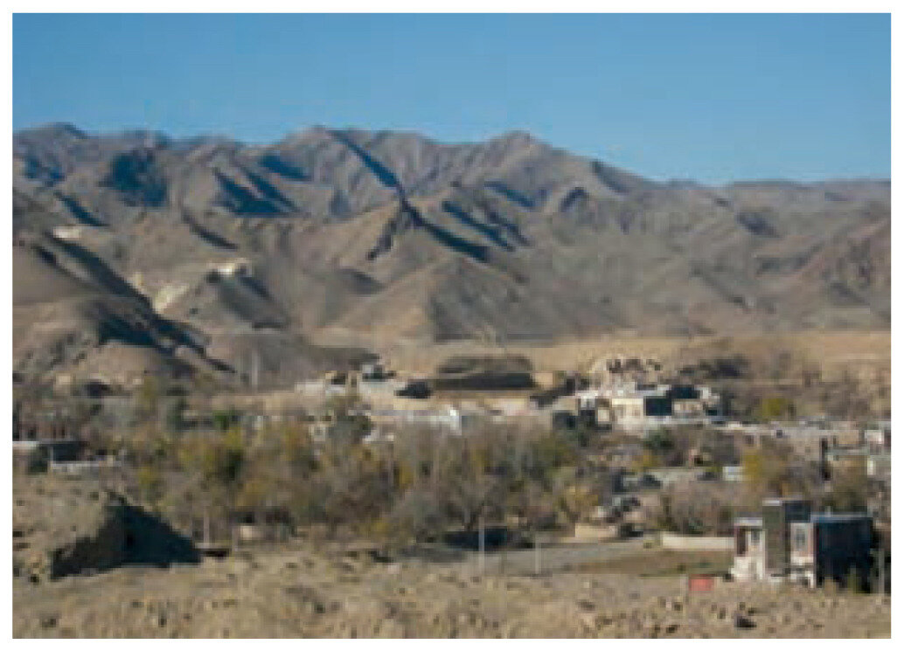
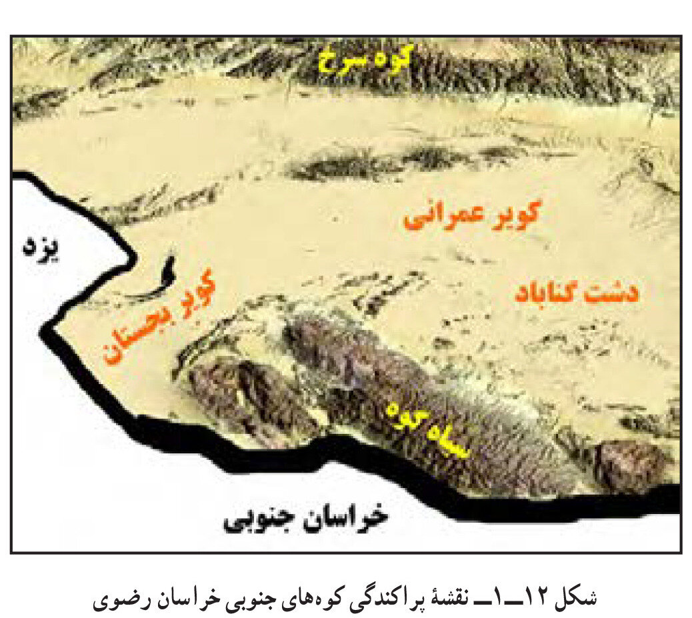
هرچه جنوبتر، کوتاهتر
عددهای کتاب درسی؛ طول میلهها متناسب با ارتفاع بینالود رسم شده است.
شمالی
هزارمسجد، بینالود، جغتای ـ بلندترین و پیوستهترین؛ چینخورده و جوانتر.
میانی
چهلتن، جام، باخرز، کوه سرخ ـ دو شاخه؛ گسلزده؛ تربت حیدریه در میان آنها.
جنوبی
سیاهکوه و همسایهها ـ کمپهنا و کمارتفاع؛ فرسایش فیزیکی شدید در اقلیم خشک.
چرا این کوهها اینطور نام گرفتهاند؟
هزارمسجد
به واسطهٔ داشتن ستونهای مرتفعی که از دور شبیه منارههای متعدد است، آن را هزارمسجد خواندهاند.
بینالود
کوهی که بین دو دشت قرار گرفته و آنها را از هم جدا کرده است؛ مردم محلی به آن «بینالوت» یا «بنلی» نیز میگویند.
جغتای
برخی برگرفته از نام جغتای، نوادهٔ چنگیز؛ و برخی «جُختای» را مرکب از «جُخ» (نوعی چوب آبنوس) و «اتای» (پرتاب کردن) میدانند که مردم با آن از خود دفاع میکردند.
چهلتن
بسیاری علت نامگذاری آن را اعتکاف چهل عارف در این ارتفاعات میدانند.
کوه سرخ
به دلیل سرخی خاک آن که ناشی از ترکیب آهن با آب و اکسیژن است.
سیاهکوه
رنگ سیاه آن ناشی از کانیهای سیلیکاتی تیره و ترکیبات آهندار است.
جدول اصلی کتاب را با هم بخوانیم
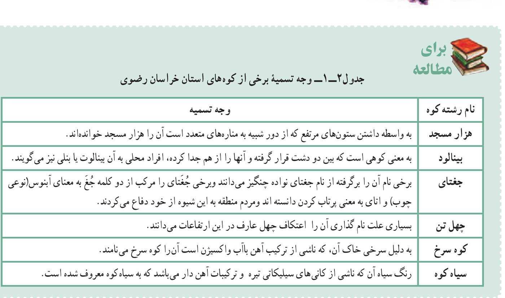
استانی روی کمربند زلزلهخیز جهان
چرا زلزله زیاد است؟
۱) قرار گرفتن استان روی کمربند زلزلهخیز آلپ ـ هیمالیا؛ ۲) وجود گسلهای متعدد و فعال در سطح استان که در طول تاریخ منشأ زلزلههای شدید بودهاند و معمولاً به علت عدم استحکام بناها خسارت مالی و جانی داشتهاند.
ضروریترین اقدام چیست؟
مطالعهٔ دقیق محل و نحوهٔ فعالیت گسلها؛ چون نقشی مهم و زیربنایی در کاهش خسارتهای ناشی از زلزله دارد (و در عمل: ساختوساز مقاوم و دور از حریم گسل).
نشانههای فعالیت گسلها در دورهٔ کواترنر
یعنی گسلها هنوز «زنده»اند و در همین دوران نزدیک به امروز هم حرکت کردهاند.
گسل درونه؛ ۷۰۰ کیلومتر
سه گسل مهم دیگر استان
گسل بینالود
امتداد شمالغربی ـ جنوبشرقی، طول تقریبی ۹۲ کیلومتر در دامنهٔ جنوبغربی رشتهکوه بینالود؛ از ۱۵ کیلومتری شرق نیشابور میگذرد. اختلاف ارتفاع فاحش بین دشت و کوههای شمال نیشابور در راستای همین گسل فعال است.
گسل کاخک
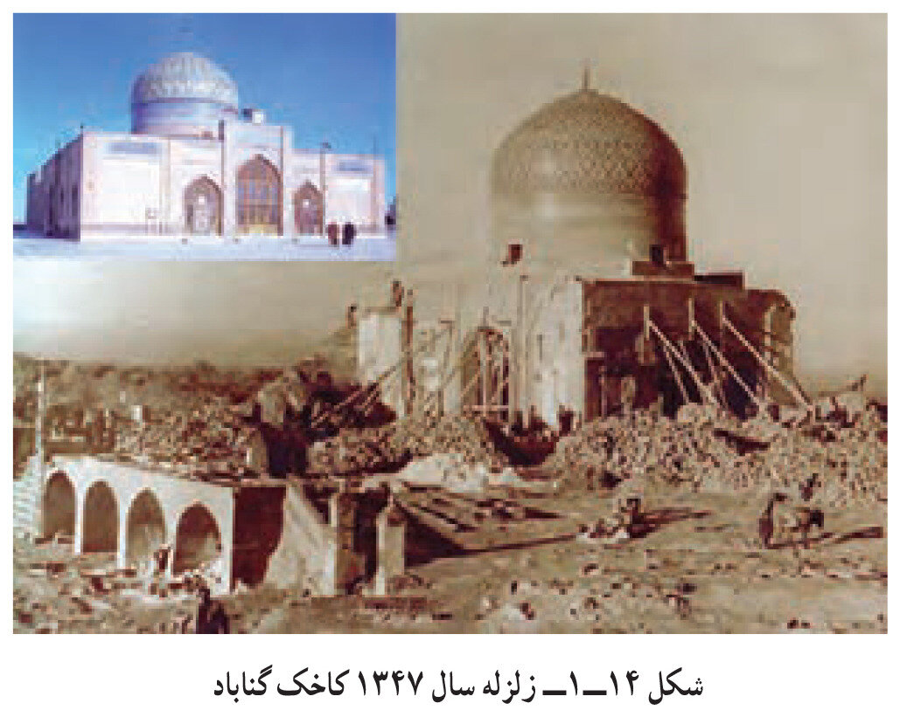
امتداد شمالغربی گسل دشت بیاض در دامنهٔ سیاهکوه؛ از فعالترین گسلهای استان در نیمقرن گذشته. زلزلهٔ مخرب و ویرانگر کاخک در سال ۱۳۴۷ مربوط به فعالیت آن بوده است (شکل ۱۴ـ۱ کتاب).
گسل تربت جام
امتداد شمالغرب ـ جنوبشرق دارد و از جنوب فریمان تا شرق تربت جام کشیده شده است.
| گسل | طول | امتداد / مسیر | نشانهٔ مهم |
|---|---|---|---|
| درونه | ۷۰۰ کیلومتر | مرز افغانستان تا دشت کویر | زلزلههای بزرگ بین بردسکن و تربت حیدریه |
| بینالود | حدود ۹۲ کیلومتر | شمالغربی ـ جنوبشرقی؛ دامنهٔ جنوبغربی بینالود | اختلاف ارتفاع شدید شمال نیشابور |
| کاخک | — | دامنهٔ سیاهکوه (ادامهٔ گسل دشت بیاض) | زلزلهٔ ۱۳۴۷ کاخک گناباد |
| تربت جام | — | جنوب فریمان تا شرق تربت جام | گسل شاخص شرق استان |
خطر زلزلهٔ شهر ما چقدر است؟
پیدا کردن شهر
شهرستان خود را روی نقشهٔ پراکندگی گسلها پیدا کنید.
فاصله از گسل
نزدیکترین خط گسل (خطوط قرمز روی نقشه) و فاصلهٔ تقریبی شهر از آن را بسنجید.
سابقهٔ تاریخی
دایرههای زلزلهٔ بیش از ۷ و کمتر از ۷ ریشتر نزدیک شهرتان را بررسی کنید.
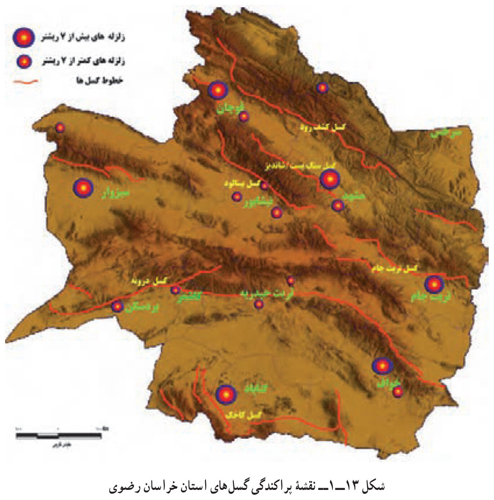
دشتها از نوع فرسایشی ـ تراکمی
مخروطافکنهها؛ قلب کشاورزی دشت مشهد
شمال استان: حاصلخیز
خاکهای دشتهای مشهد، قوچان، نیشابور، تربت جام و تربت حیدریه بسیار حاصلخیزند.
جنوب استان: نیازمند مدیریت علمی
خاکها اغلب بافت متفاوتی دارند؛ برای بهرهبرداری زراعی باید از شیوههای نوین علمی بهره برد تا از تخریب خاک جلوگیری شود.
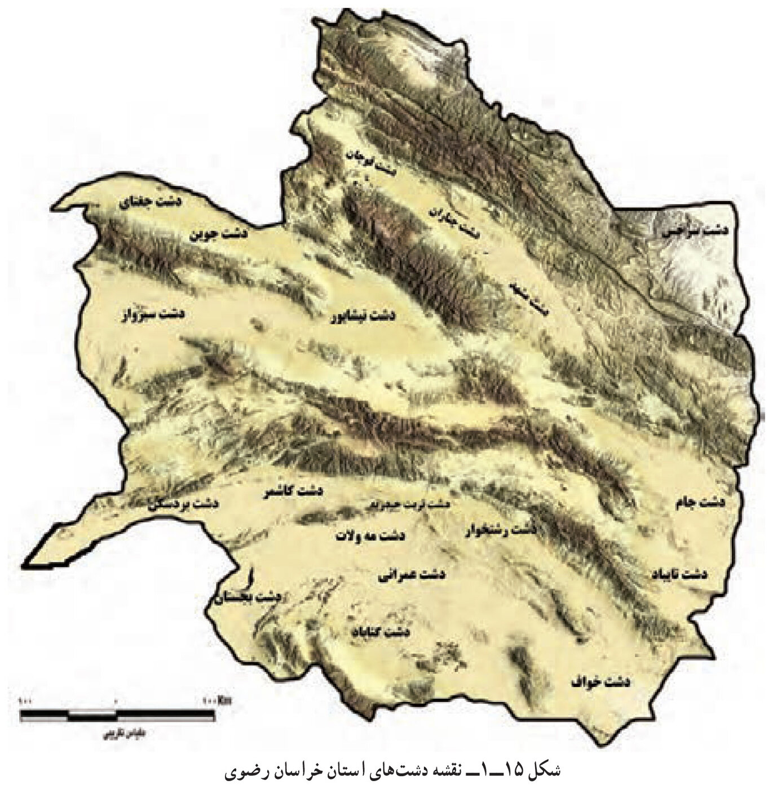
زندگی ما روی نقشهٔ ناهمواریها نوشته شده
تنوع محیطی گسترده
باعث تفاوتهای وسیع در چشماندازهای اقتصادی و فرهنگی نواحی مختلف استان شده است.
وابستگی دشت به کوه
ادامهٔ حیات دشتهای استان از نظر تأمین ذخایر آب و خاک به کوهستانها وابسته است.
انطباق زندگی جمعیت
پایههای زیستی جمعیت استان از نظر اقتصادی، سیاسی و فرهنگی منطبق بر وضعیت ناهمواریهای استان است.
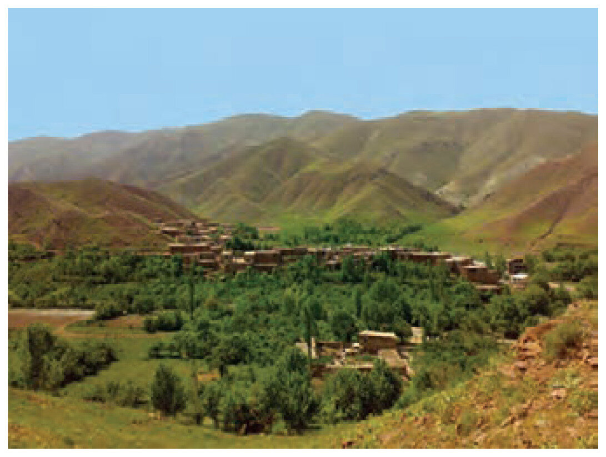
کوه، آب و خاک میسازد؛
دشت، شهر و کشتزار
سه نمونهٔ ملموس
دامپروری کوهستانی
کوهستانها شرایط مناسب استقرار پوشش گیاهی مرتعی را فراهم کرده و زمینهٔ رواج دامپروری را در شهرستانهایی مانند قوچان و کلات فراهم آوردهاند.
اکوتوریسم و گردشگری
ظرفیتهای زیستمحیطی، بهویژه در مناطق کوهستانی، در توسعهٔ اکوتوریسم روستاها و شهرها نقش مهمی دارد؛ توانهای گردشگری در شاندیز، کاخک، کنگ، رودمعجن، دررود و… مشهود است.
سکونتگاه در دامنهها
کوهستانها با تعدیل آبوهوای گرم و خشک دشتهایی چون کاشمر، مشهد، نیشابور و تربت حیدریه، زیرساخت مناسبی در دامنهها برای ایجاد سکونتگاههای انسانی و شهری ساختهاند.
مرور امتحانی
نقشهٔ مفهومی ناهمواریهای استان
اعداد طلایی درس
آزمون ناهمواریهای استان
به قلهٔ این درس رسیدیم!
حالا میتوانید روی نقشه و نیمرخها، کوهها، دشتها و گسلهای استان خودتان را پیدا کنید و نقششان را در زندگی مردم توضیح دهید.
ارائهدهندگان: محمدحسین ارقبائی، سینا اسدی و امیرعلی اسداللهی